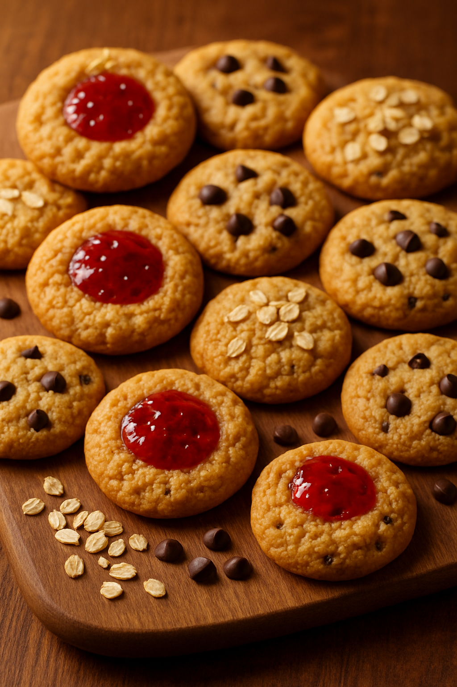

Galletas de Avena y Plátano

Descripción: Galletas saludables y fáciles, perfectas para la colación. Puedes agregar chips de chocolate o mermelada para variar el sabor.
Ingredientes:
- 2 plátanos maduros
- 1 taza de avena
- Opcional: chips de chocolate o una cucharada de mermelada
Preparación:
- Precalienta el horno a 180°C.
- Machaca los plátanos y mezcla con la avena.
- Agrega chips de chocolate o mermelada si deseas.
- Forma bolitas y aplánalas sobre una bandeja enmantequillada.
- Hornea por 15-20 minutos o hasta dorar.
Información Nutricional (por unidad aprox):
- Calorías: 90
- Carbohidratos: 16g
- Grasas: 2g
- Proteínas: 2g
Tiempo estimado: 30 minutos
Dificultad: Muy fácil